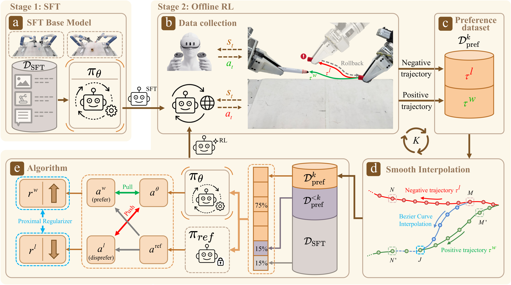
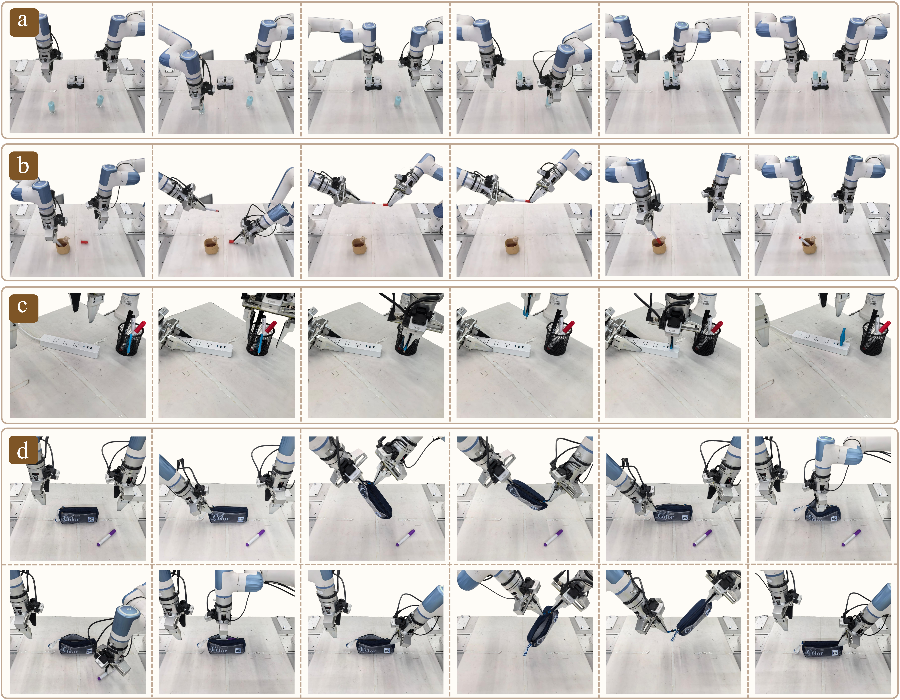
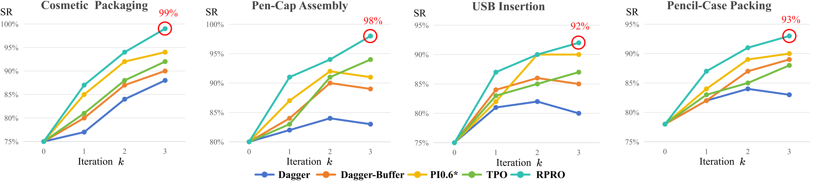
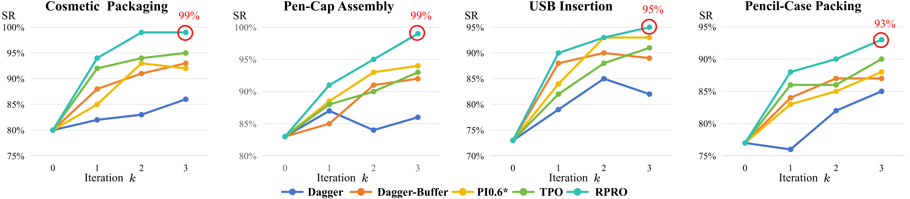
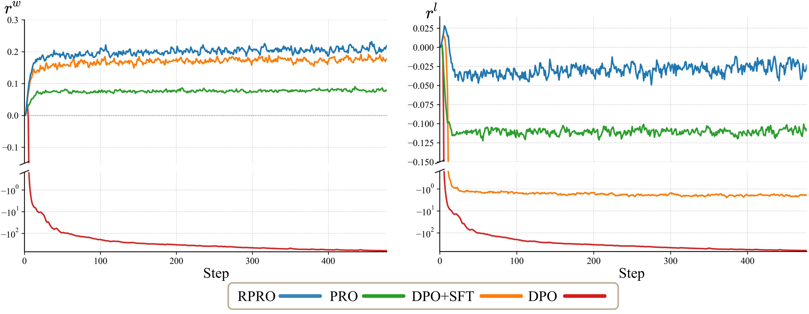
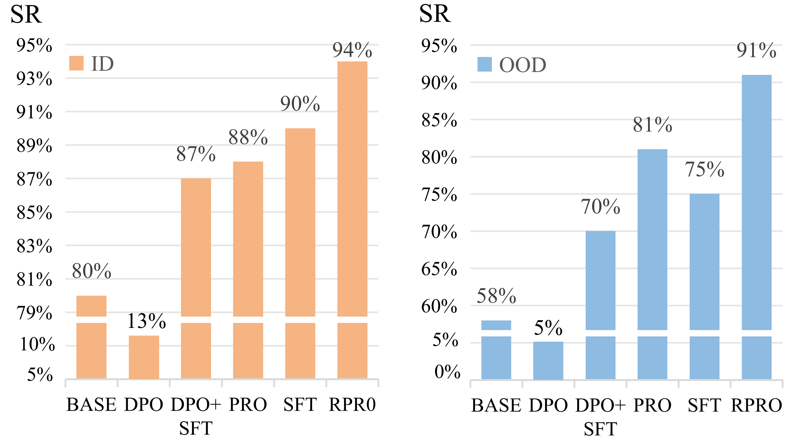

Post-training Vision-Language-Action (VLA) models into policies that can be reliably deployed on real robots remains a major bottleneck. SFT and DAgger exploit failure signals only indirectly, and reward-based RL is bottlenecked by the difficulty of real-world reward design and of training reliable critics. We present FlowPRO, a reward-free offline reinforced fine-tuning framework for flow-matching VLAs. Algorithmically, we propose RPRO (Robotic Flow-matching Proximalized Preference Optimization), a preference-optimization objective tailored to the flow-matching action head of VLA models. RPRO pairs a contrastive optimizer with an explicit proximal regularizer that anchors the absolute magnitude of the implicit reward, thereby eliminating the reward-hacking failure mode of plain Flow-DPO. On the data side, a teleoperated intervention-and-rollback paradigm produces naturally paired positive and negative trajectories (τw, τl) on a real robot from a single operator action; a Smooth Interpolation procedure, combined with batch mixing, then converts these sparse corrections into dense per-state supervision while preserving the base policy's capabilities. On four long-horizon bimanual tasks, FlowPRO attains the highest success rate, outperforming four representative baselines, and ablations confirm the contribution of each loss component.
FlowPRO is a two-stage framework. Stage 1 performs supervised fine-tuning on a task-specific dataset to obtain a base policy from a flow-matching VLA backbone. Stage 2 then runs an iterative offline-RL loop on top of it for K rounds. In each round, three components work together:

Figure 1. Overview of the FlowPRO framework. (a) SFT Base Model: Stage 1 trains πθ on DSFT. (b) Data Collection: operator-triggered rollback and operator teleoperation yield paired positive and negative trajectories (τw, τl). (c) Preference Dataset: pairs are aggregated into Dprefk. (d) Smooth Interpolation: Bézier interpolation synthesizes the missing counterpart at action-chunk granularity (e.g., M→J, J→N′), producing dense per-state tuples. (e) Algorithm (RPRO): aθ, aref from πθ and frozen πref are compared against aw/al to drive rw↑, rl↓, optimized on a mixed batch of Dprefk, Dpref<k, and DSFT; the updated policy is redeployed for K rounds.
We evaluate FlowPRO on four long-horizon bimanual tasks on a Dobot XTrainer platform — Pack (cosmetic packaging), Cap (pen-cap assembly), USB (USB insertion), and Case (pencil-case packing) — each evaluated with 100 rollouts on top of two flow-matching VLA backbones (π0 and π0.5).

Rollout videos of the four real-robot tasks. Click play to watch.
Pack — cosmetic packaging
Cap — pen-cap assembly
USB — USB insertion
Case — pencil-case packing
Each clip places the base flow-matching VLA (Before RL) and the FlowPRO-finetuned policy (After RL) side by side under identical initial conditions, so the improvement in success rate, stability, and motion smoothness is directly visible.
We evaluate FlowPRO on a Dobot XTrainer bimanual platform across the four long-horizon tasks above, using two flow-matching VLA backbones (π0 and π0.5) as base policies. Each entry is averaged over 3 training seeds × 100 randomized rollouts per seed.
| Base Policy | Fine-tune | Success Rate (%) ↑ (mean ± std across 3 seeds) | |||
|---|---|---|---|---|---|
| PACK | CAP | USB | CASE | ||
| π0 | DAgger | 88.0 ±1.3 | 83.0 ±3.0 | 80.0 ±2.8 | 83.0 ±2.6 |
| DAgger-Buffered | 90.0 ±2.0 | 89.0 ±2.4 | 85.0 ±1.6 | 89.0 ±2.2 | |
| π0.6* | 94.0 ±1.5 | 91.0 ±1.8 | 90.0 ±3.2 | 90.0 ±1.4 | |
| TPO | 92.0 ±1.7 | 94.0 ±2.2 | 87.0 ±1.7 | 88.0 ±2.3 | |
| RPRO (ours) | 99.0 ±1.0 | 98.0 ±1.5 | 92.0 ±1.5 | 93.0 ±2.0 | |
| π0.5 | DAgger | 86.0 ±2.5 | 86.0 ±2.3 | 82.0 ±3.4 | 85.0 ±3.3 |
| DAgger-Buffered | 93.0 ±1.3 | 92.0 ±1.5 | 89.0 ±2.1 | 87.0 ±2.4 | |
| π0.6* | 92.0 ±2.8 | 94.0 ±1.3 | 93.0 ±1.9 | 88.0 ±2.7 | |
| TPO | 95.0 ±1.6 | 93.0 ±2.8 | 91.0 ±2.4 | 90.0 ±1.5 | |
| RPRO (ours) | 99.0 ±1.0 | 99.0 ±1.0 | 95.0 ±1.6 | 93.0 ±1.2 | |
Table 1 (condensed). SR is reported as mean ± std (in pp) across 3 training seeds, with each per-seed SR computed over n = 100 randomized rollouts. RPRO is highlighted; completion-time columns are in the paper.

(a) Base policy: π0

(b) Base policy: π0.5
Figure 3. Per-iteration success rates (SR) on the four real-robot tasks across iterative post-training rounds.
We progressively strip components from the full RPRO objective — RPRO → PRO (no SFT term) → DPO+SFT (no proximal regularizer) → DPO (neither) — and also compare against SFT (no contrastive term). The diagnostic implicit-reward dynamics reveal a clean explanation for why plain Flow-DPO collapses:

(a) Per-step implicit reward on positive (rw) and negative (rl) actions during training.

(b) Task SR under in-distribution (ID) and out-of-distribution (OOD) initial conditions.
Figure 4. Loss-component ablations of RPRO on the PACK task. (a) Per-step implicit reward on positive (rw) and negative (rl) actions during training. (b) Task SR under in-distribution (ID) and out-of-distribution (OOD) initial conditions.
Takeaways. (1) Across 8 task–backbone strata, RPRO wins every single one, with the largest gains on the hardest precision and deformable tasks. (2) The proximal regularizer is what makes preference optimization usable for flow-matching VLAs — without it, the implicit reward on positive actions runs away and the policy degrades. (3) The SFT anchor further accelerates convergence and prevents forgetting.
@inproceedings{wu2026flowpro,
title = {FlowPRO: Reward-Free Reinforced Fine-Tuning of Flow-Matching VLAs via Proximalized Preference Optimization},
author = {Wu, Yihao and Zhang, He and Tan, Junbo and Wang, Xueqian and Zhang, Zhengyou},
booktitle = {arXiv preprint arXiv:2606.05468},
year = {2026},
note = {Under review}
}